Il lato decentralizzato dell'economia.
Una giornata di confronto su moneta digitale, finanza programmabile, infrastrutture verificabili e nuovi modelli di governance, nel contesto del Festival dell'Economia di Trento.
Il Festival dell'Economia di Trento ha storicamente ospitato un gruppo selezionato di figure istituzionali di alto livello.
Politici, accademici e commentatori. Open Value introduce un livello mancante: la sperimentazione.
Crediamo che i nuovi sistemi economici non possano emergere soltanto dal commento o dalla teoria: devono essere progettati, testati e resi eseguibili.
Open Value è una giornata che riunisce imprenditori, ricercatori, economisti, builder e attori orientati alle policy per discutere come moneta digitale, finanza programmabile e sistemi verificabili stiano ridefinendo il coordinamento economico.
Open Value nasce come layer parallelo al Festival dell’Economia, con l’obiettivo di attivare un dibattito più sperimentale, orientato alla proposta e all’azione. In un contesto segnato dall’emergere di nuove forme di concentrazione tecnologica e finanziaria, vogliamo contribuire allo sviluppo di una visione italiana ed europea basata su infrastrutture aperte, verificabili e orientate al bene pubblico.
Uno Smart Contract è teoria economica resa eseguibile.
> loading programmable finance...
> loading verifiable governance...
> loading civic infrastructure...
SUCCESS: new coordination models deployed
Era della dominanza fiscale
Come e perché persone e capitali si stanno spostando verso oro, BTC e sistemi monetari alternativi: rischi e opportunità.
Sovranità portabile
Asset digitali, libertà individuale e nuove forme di sovranità per persone e stati-nazione indebitati.
Network States e Network Societies
Utopia, distopia o futuro inevitabile? Coordinamento post-westfaliano e nuove comunità native digitali.
Stablecoin e finanza programmabile
Stablecoin, Digital Euro, pagamenti, liquidità onchain, adozione istituzionale e programmable finance.
Composable finance e DeFi
Lending, risk management, interoperabilità e prodotti finanziari modulari tra DeFi e TradFi.
Real World Assets
Come la tokenizzazione di asset del mondo reale può trasformare finanza, capitale e infrastrutture.
Public goods e sistemi di funding
Quadratic Funding, Harberger Tax, valute comunitarie e nuovi strumenti per finanziare risorse condivise.
Verifiable Cities e infrastrutture civiche
Città verificabili, trasparenza urbana, reporting civico, governance dei dati e nuove infrastrutture pubbliche auditabili.
Panel e sessioni applicative pensati per mettere in dialogo ricerca, istituzioni, imprenditoria e sperimentazione dal basso.
Colazione e registrazione
Networking di apertura e benvenuto.
Panel I — Economia tokenizzata
Token economy, stablecoin, Digital Euro, RWA, pagamenti, stabilità di mercato, finanza programmabile.
Panel II — Finanza aperta
DeFi, TradFi, capital management, risk, access, prodotti, composable finance.
Panel III — Pubblico, governance e città verificabili
Voting, taxation, governance, DAO, data sovereignty, AI, knowledge systems, verifiable cities.
Pranzo e networking
Pausa pranzo e networking informale.
Sessione workshop
Solidity 101, DeFi in pratica, ESG e verifiable cities — sessioni parallele.
Fireside / panel TBD
Sessione da confermare — dettagli in arrivo.
Aperitivo finale
Networking di chiusura e brindisi.
Solidity 101
Solidity non è solo programmazione. È teoria economica resa eseguibile. Una sessione che usa smart contract semplici per mostrare come la teoria economica possa diventare infrastruttura.
DeFi in pratica
Una sessione pratica su primitive finanziarie onchain: lending, liquidità, modularità e interoperabilità tra protocolli.
ESG, economie circolari e città verificabili
Una sessione su modelli economici tokenless, coordinamento locale, beni pubblici, civic reporting e primi framework per verifiable cities.
Open Value accoglie sponsor allineati interessati a sostenere ricerca aperta, sperimentazione di interesse pubblico e dialogo su finanza programmabile, governance e sistemi verificabili.
Impact Hub Trento
Uno spazio di innovazione nel cuore di Trento, adatto a un evento che mette in dialogo economia, tecnologia e sperimentazione.
Via Roberto da Sanseverino, 95
38122 Trento TN, Italia

Unisciti all'esperimento.
Non solo una conferenza.
Un test dal vivo delle economie future.